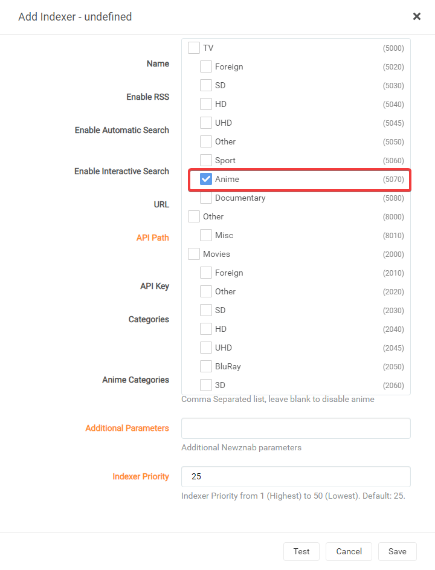
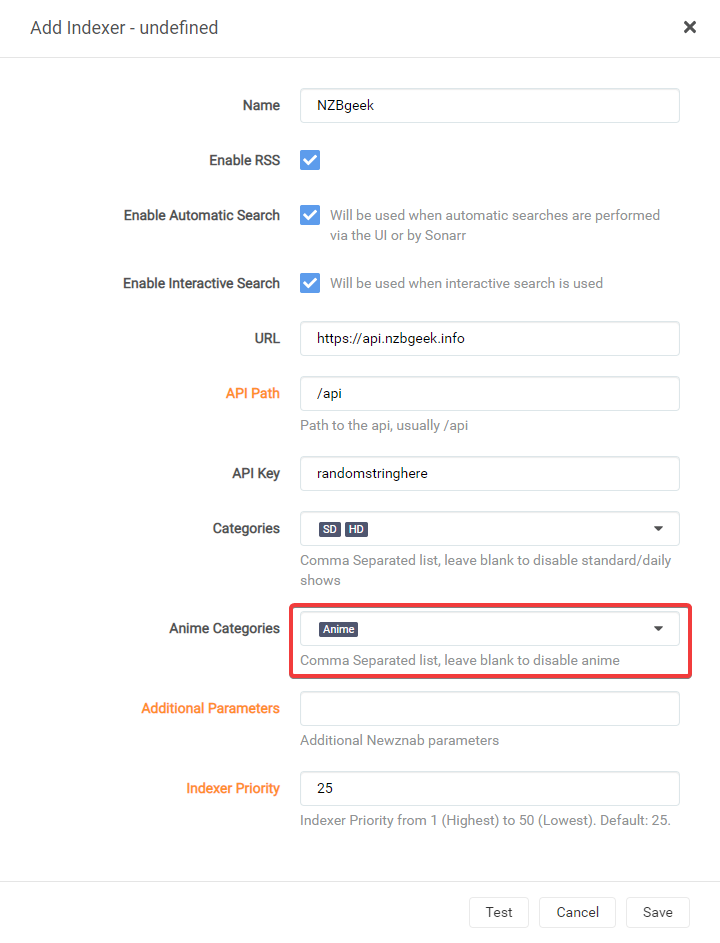
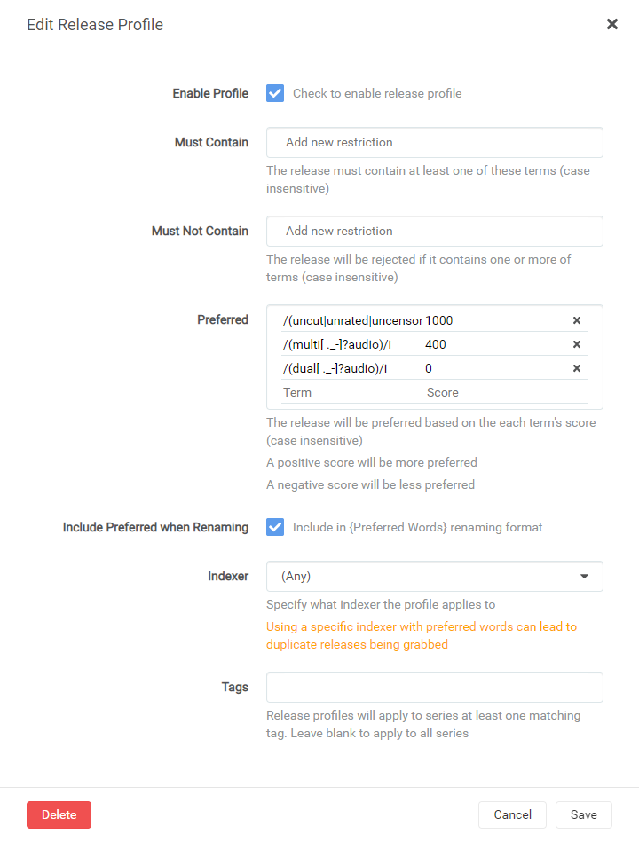
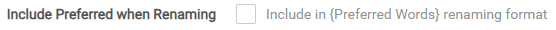

Profil de version RegEx (Anime)⧫
Note
Ce guide est créé et maintenu par Visorask/Visorak
Il est recommandé d’exécuter deux instances Sonarr. Un pour l’anime et un pour les émissions de télévision normales, ou vous pouvez utiliser des balises.
Étant donné que les profils de version sont globaux sans utilisation de balise.
Regex double audio⧫
Après avoir testé la plupart de ces paramètres, ils fonctionnent plutôt bien, mais Anime est une bête inconstante avec laquelle jouer, alors soyez prévenu.
Anime Supprimer⧫
Si vous rencontrez des problèmes avec le téléchargement de fichiers supplémentaires comme NCED ou NCOP
Si vous rencontrez des problèmes avec Sonarr pour détecter un certain nombre de :
- NCED
-NCOP - Vidéos musicales
- les OP
Ensuite, ce script (basé sur Linux uniquement) supprimera ces fichiers et s’en débarrassera et vous n’aurez pas à vous soucier qu’ils encombrent votre processus d’importation automatique ou manuelle.
#!/usr/bin/env bash
# Définissez l'emplacement suivant sur votre emplacement de téléchargement terminé pour Anime.
# Généralement l'un des chemins suivants :
# Dockers => /data/{usenet|torrents}/anime
# Cloudbox => /mnt/local/downloads/nzbs/nzbget/completed/sonarranime
location="/votre/téléchargement/chemin/ici"
find $location -type f \( -iname "*op[0-9]*" -o -iname "*nced*" -o -iname "*ncop*" -o -iname "*clip vidéo*" \) -exec rm -rf {} \;
Ce script sera appelé via une connexion personnalisée dans Sonarr.
- Copiez le contenu du script dans le chemin de fichier auquel Sonarr a accès (
/config/app/ou/appdata/sonarr/scripts) - Modifiez le
location="/your/download/path/here"et assurez-vous qu’il est entre guillemets. - Enregistrez-le ensuite et chmod +x le script.
- Dans Sonarr, allez dans
Paramètres=>Connect=> Cliquez sur le symbole+=> et sélectionnezCustom Script - Changez le nom comme vous le souhaitez.
- Sélectionnez « Sur saisie » et « Sur importation ».
- Cliquez sur l’icône Dossier ou saisissez le chemin d’accès au script que vous avez choisi précédemment.
{kind=link}
Désormais, lorsque vous téléchargez ou importez des fichiers, le script s’exécutera et effacera les fichiers que vous n’utiliserez probablement pas et si vous les voulez bien, ce script n’est pas pour vous.
Gestion des médias⧫
Note
Il existe quelques paramètres qui facilitent grandement la recherche et la conservation de certaines informations sur votre anime, ainsi que des ajustements pour qu’il fonctionne mieux avec HamaAgent pour Plex.
Schéma de dénomination suggéré⧫
Pour cela, j’ai utilisé le Schéma de dénomination recommandé par Sonarr avec seulement un petit changement pour une erreur de formatage à corriger et le Series Folder Format pour une correspondance plus facile.
Format des épisodes d’anime⧫
A toutes les informations nécessaires et un petit plus si vous aviez besoin de reconstruire.
{Series TitleYear} - S{season:00}E{episode:00} - {absolute:000} - {Episode CleanTitle} [{Mots préférés }{Qualité complète}]{[MediaInfo VideoDynamicRange]}[{MediaInfo VideoBitDepth}bit ]{[MediaInfo VideoCodec]}[{Mediainfo AudioCodec} { Mediainfo AudioChannels}]{MediaInfo AudioLanguages}{-Release Group}
??? résumé « RÉSULTATS : »
Épisode unique :
`Le titre de la série ! (2010) - S01E01 - 001 - Titre de l'épisode 1 [AMZN WEBDL-1080p v2][HDR][10bit][x264][DTS 5.1][FLAC][JA]-RlsGrp`
Épisode multiple :
`Le titre de la série ! (2010) - S01E01-E02-E03 - 001-002-003 - Titre de l'épisode [AMZN WEBDL-1080p v2][HDR][10bit][x264][DTS 5.1][FLAC][JA]-RlsGrp`
Format de dossier de la série ####
L’ajout de l’année avec l’identifiant tvdb permet que la correspondance soit correcte. Merci salé.
{Titre de la sérieAnnée} [tvdb-{TvdbId}]
RÉSULTAT:
Le titre de la série ! (2010) [tvdb-12345]
Format du dossier de saison⧫
La seule vraie option à utiliser à mon avis.
Saison {saison:00}
RÉSULTAT:
‘Saison 01’
Style multi-épisodes⧫
Plage préfixée
RÉSULTATS:

Exemple
{kind=link}
Profil de qualité⧫
Nous devons ajouter « HDTV-1080p » et « Bluray-1080p » dans le même groupe que « WEBDL-1080p » et « WEBRip-1080p » afin qu’il soit téléchargé correctement et ne soit pas mis à niveau au-delà de HDTV-1080P si les mots préférés ne le permettent pas. il.
{kind=link}
Indexeurs⧫
Nous devons ajouter les catégories Anime à nos indexeurs, sinon tout cela ne fonctionnera pas très bien.
Exemple
- Nous devons ouvrir « Paramètres -> Indexeurs »
- Sélectionnez le ou les indexeurs que vous souhaitez utiliser pour « Anime »
- Sélectionnez la liste déroulante « Catégories d’anime ».

- Sélectionnez la catégorie « Anime ».
 - Cliquez en dehors du modal contextuel mais à l’intérieur du modal « Ajouter un indexeur ».

{kind=link}
{kind=link}
Note
Cochez « Inclure les préférences lors du renommage » le cas échéant et ajoutez « {Mots préférés} » à votre schéma de renommage, sinon vous pourriez avoir des problèmes de boucle de téléchargement !!!
Profils de version⧫
Note
Nous allons utiliser 2 profils de version distincts.
Profil de la première version⧫
Conseil
À FAIRE Cochez « Inclure les préférences lors du changement de nom » sur ce profil de version.
{kind=link}
Multi-Audio⧫
Ajoutez-le à vos favoris avec un score de [500]
/(multi[ ._-]?audio)/je
Double audio⧫
Ajoutez-le à vos favoris avec un score de [0]. Ceci concerne uniquement les renommages et c’est pourquoi il est à 0. Il est également ajouté dans le deuxième profil. Celui-ci vise à garantir que les mots préférés soient ajoutés.
/(double[ ._-]?audio)/i
Facultatif (non coupé|non classé|non censuré)⧫
Ajoutez-le à vos favoris avec un score de [100]/[-10000]
Si vous souhaitez que ce soit prioritaire, définissez-le sur 100. Si vous ne voulez pas de censure, réglez-le sur -10000. Si cela ne vous intéresse pas, laissez-le de côté. Le raisonnement derrière seulement 100 est qu’il ne l’emporte pas sur les autres versions plus haut dans la chaîne, de cette façon, il l’emportera peut-être sur quelques versions, mais pas plus. Et -10000 pour, espérons-le, le mettre au bas de n’importe quelle liste de niveaux si vous ne le souhaitez pas.
/(non coupé|non classé|non censuré|\b(AT[-_. ]?X)\b)/i
Note
Une fois terminé, cela devrait ressembler à ceci :

{kind=link}
Profil de la deuxième version⧫
Avertissement
NE PAS Cocher « Inclure les préférences lors du changement de nom »

{kind=link}
Ne doit pas contenir⧫
La raison pour laquelle la plupart d’entre eux sont ajoutés est due à leur qualité merdique ou tout simplement, ils ne sont pas aussi bons que les autres produits disponibles. Cela peut être modifié selon les besoins. Faites-moi savoir si vous rencontrez des problèmes ici. Vous devriez pouvoir simplement les copier-coller en une seule fois. S’il y a une raison pour laquelle quelque chose ne devrait pas être ici, faites-le-moi savoir ainsi que votre logique et je serai ouvert à l’ajustement.
Conseil
Si vous souhaitez des versions « dub », supprimez les 2 dernières lignes et ne les ajoutez pas.
/(\[EMBER\]|-EMBER\b|DaddySubs)/i,
/(BDMV|M2TS|\bSSA\b|\bVOSTFR\b|\bAbemaTV\b)/i,
/(CuaP|PnPSubs|ICEBLUE|SLAX|U3-Web)/i,
/(Raws-Maji|\bKRP\b|M@nI|Kanjouteki|PuyaSubs)/i,
/\b(Béatrice|ohys|Kawaiika|neko|papa)[ ._-]?(raws)\b/i,
/\b(LowPower|Scryous)[ ._-]?(bruts)\b/i,
/\b(NS|AREY|BDMV|BDVD|BJX|DKB|DP|TnF)\b/i,
/(Amb3r|DsunS|ExREN|\$tore-Chill)/i,
/(\[Hatsuyuki\]|-Hatsuyuki\b|\[Hitoku\]|-Hitoki\b)/i,
/(\[Foxtrot\]|-Foxtrot\b|HollowRoxas|\bMGD\b)/i,
/(JacobSwaggedUp|KEKMASTERS|\[Acariens\]|-Acariens\b)/i,
/(neoHEVC|Pantsu|\[Pao\]|-Pao\b|Plex Friendly)/i,
/(Rando235|RandomRemux|Reaktor|RightShiftBy2)/i,
/(\bSHFS\b|StrayGods|\bUQW\b|Yabai_Desu_Ne)/i,
/(YakuboEncodes|\b(WtF[ ._-]?Anime)\b)/i,
/((funi|eng(lish)?)_?dub|\bdub(bed)?\b)/i,
/(Golumpa|torenter69|KamiFS|KaiDubs)/i
Préféré⧫
Note
Deux lignes dans un groupe ne sont là que pour des raisons de lisibilité, mais permettent d’obtenir le même résultat et le même score.
Ajoutez-le à vos favoris avec un score de [501]
Note
Celui-ci est défini sur 501 afin qu’il puisse sauter d’un niveau si nécessaire, mais pas plus.
/dual[ ._-]?audio|EN\+JA|JA\+EN/i
Conseil
Ces prochaines versions sont facultatives, mais elles sont là pour déplacer les versions vers les niveaux inférieurs de « 1080/720p » ou « WEB-DL/Blu-Ray ». Ajoutera une autre note comme celle-ci pour terminer la section facultative.
Ajoutez-le à vos favoris avec un score de [100]
Note
Nous l’ajoutons à 100 afin que tout « Blu-Ray » inconnu puisse sauter des niveaux à l’intérieur des catégories Subs mais n’interfère pas avec les niveaux supérieurs.
/\b(?:(Blu-?Ray|BDMux|BD(?!$))|(B[DR]Rip))(?:\b|$|[ .])/ix
Ajoutez-le à vos favoris avec un score de [15]
/\b(WEB[-_. ]?DL|WebHD|[. ]WEB[. ](?:[xh]26[45]|DDP?5[. ]1)|[. ](?-i: WEB)$|\d+0p(?:WEB-DLMux|\b\s\/\sWEB\s\/\s\b))/ix
Ajoutez-le à vos favoris avec un score de [10]
/(Web-?Rip|WEBMux)/ix
Ajoutez-le à vos favoris avec un score de [5]
/\b(?:(1080p|1920x1080|1440p|FHD|1080i|4kto1080p))\b/i
Conseil
C’est la fin de la section facultative.
Ajoutez-le à vos favoris avec un score de [4 000].
BluRay-Remux / Dual-Audio / 1er niveau
/(deanzel|\bZR\b|\bCTR\b|\bSCY\b|\bMK\b|TTGA)/i
/(\bShir\b|Années perdues|BluDragon|KAWAiREMUX)/i
/(\[AC\]|-AC$|ShadyCrab|Rasetsu|Raizel|Dragon-Releases)/i
/(\[Spark\]|-Spark\b|\bREVO\b|\bSRLS\b|ANThELIa)/i
/(\[Vanille\]|-Vanille\b|\bAP\b)/i
Ajoutez ceci à vos favoris avec un score de [3750]
BluRay / Dual-Audio / Special (les versions dont ils disposent se situent entre les versions ci-dessous et les remux ci-dessus.)
/(E[.-]N[.-]D)/je
Ajoutez-le à vos favoris avec un score de [3 500].
BluRay / Double audio / 1er niveau
/(\bHAiKU\b|Destin-exilé|\b(ED)\b|Koten[ ._-]Gars)/i
/(\[GHOST\]|-GHOST\b|\[NPC\]|-NPC\b|\bCBM\b)/i
/(\bKH\b|\bCBT\b|\[naiyas\]|-naiyas\b|ShowY|Kametsu|\bPn8\b|Hark0N)/i
Ajoutez-le à vos favoris avec un score de [3 000].
BluRay / Dual-Audio / Scène|Groupes P2P
/(\bDHD\b|RedBlade|TENEIGHTY|WaLMaRT)/i
/(\bBMF\b|\[STRiFE\]|-STRiFE\b)/i
/(MKVULTRA|iAHD|ANiHLS)/i
Ajoutez-le à vos favoris avec un score de [2 500].
BluRay / Double audio / 2e niveau
/(\[YURASUKA\]|-YURASUKA\b|karios|Arukoru)/i
/(\bRH\b|\[Prof\]|-Prof\b)/i
Ajoutez-le à vos favoris avec un score de [2000]
WebSource / Dual|Multi-Audio
/(DragsterPS)/je
Ajoutez-le à vos favoris avec un score de [1 500].
WebSource / Double Audio
/(xPearse|\bMCR\b|\bKS\b|KiyoshiStar)/i
Ajoutez-le à vos favoris avec un score de [1 000].
DVD/double audio
/(\b(AL)\b)/je
Ajoutez-le à vos favoris avec un score de [300]
Sous-marins avec multi comme l’allemand, le français, l’espagnol, l’italien, le russe, l’arabe, le portugais et l’anglais
/(Erai-raws|KAN3D2M)/i
Ajoutez-le à vos favoris avec un score de [250]
Sous-marins
/(HorribleSubs|SubsS'il vous plaît|SallySubs)/i
Ajoutez-le à vos favoris avec un score de [200]
Sous-marins 2e niveau
/(\[Mystérie\]|-Mystérie\b|Asenshi)/i
/(\[méta\]|-méta\b|BlueLobster)/i
Ajoutez-le à vos favoris avec un score de [150]
Sous-marins 3e niveau
/(\bGJM\b|kBaraka)/i
Ajoutez-le à vos favoris avec un score de [100]
FanSubs 1er niveau
/(\bCH\b|\bFFF\b|Licca|Soldado|SNSbu)/i
/(Coalgirls|BlurayDesuYo|DameDesuYo|\bPAS\b)/i
Ajoutez-le à vos favoris avec un score de [50]
FanSubs 2e niveau
/(\[Orphelin\]|-Orphelin\b|\[Yabai\]|-Yabai\b|\bNii-sama\b)/i
/(\[Doki\]|-Doki\b|\[Chihiro\]|-Chihiro\b|Final8)/i
/(\[tenshi\]|-tenshi\b|SHiN-gx)/i
Ajoutez-le à vos favoris avec un score de [25]
FanSubs 3e niveau
/(AkihitoSubs|\bASW\b|Commie)/i
Note
Ce sont des paramètres supplémentaires qui peuvent aider et qui ne sont pas nécessaires mais qui sont agréables à avoir. Ils sont réglés à un niveau bas principalement pour se surpasser et ne pas interférer avec les autres versions.
Ajoutez-le à vos favoris avec un score de [1]
Ajoute Hi10|Hi10p dans un match. Préfère cela à certaines correspondances erronées.
/(10.?bit|hi10p)/je
Ajoutez-le à vos favoris avec un score de [1]
Ajoute une version en raison des groupes d’anime qui résolvent parfois des problèmes avec leurs versions.
/\b(v2)\b/je
Ajoutez-le à vos favoris avec un score de [2]
/\b(v3)\b/i
Ajoutez-le à vos favoris avec un score de [3]
/\b(v4)\b/i
Note
Cette section peut être controversée, mais la plupart de ces versions sont des encodages micro/mini ou une qualité merdique. Personnellement, je les ajoute dans la section Je ne veux pas, mais je les laisserai ici avec des valeurs négatives afin que vous puissiez toujours les récupérer si tout le reste échoue.
Ajoutez ceci à vos favoris avec un score de [-10000]
Sub-Par Releases 1st Tier (Ré-encodé en merde ou en très petites tailles de fichiers) (Un peu moins pire que le reste)
/(\[Judas\]|-Judas|\[Cléo\]|-Cléo)/i
/(AnimeRG|bonkai77|URANIME)/je
Ajoutez ceci à vos favoris avec un score de [-15000]
Sub-Par Releases 2nd Tier (Réencodé en merde ou en très petites tailles de fichiers) (Séparé sur des lignes séparées pour plus de lisibilité)
/(\[Pixel\]|-Pixel\b\[EDGE\]|-EDGE\b|\[Ranger\]|-Ranger\b)/i
/(SpaceFish|DeadFish|\bDB\b|Man\.K|\bHR\b)/i
/(BakedFish|N[eo][wo]b[ ._-]?Subs|\bAnime[ .]Time\b)/i
/(AnimeKaizoku|\[Kaizoku\]|-Kaizoku\b|\bCBB\b|phazer11)/i
/(iPUNISHER|MiniTheatre|MiniFreeza|Mr\.Deadpool)/i
/(NemDiggers|Projet-gxs|youshikibi)/i
/(\bMD\b|Pog42|mdcx)/i
/(A-Destiny|TOPKEK|\bUwU\b|DARKFLiX)/i
/(\[Maximus\]|-Maximus\b|\[224\]|-224\b)/i
/(\[Harunatsu\]|-Harunatsu\b)/i
/(\[Davinci\]|-Davinci\b)/i
Si vous souhaitez que ce qui précède soit dans NE VOULEZ PAS dans un format simple, le voici.
/(\[Pixel\]|-Pixel\b\[EDGE\]|-EDGE\b|\[Ranger\]|-Ranger\b)/i,
/(SpaceFish|DeadFish|\bDB\b|Man\.K|\bHR\b)/i,
/(BakedFish|N[eo][wo]b[ ._-]?Subs|\bAnime Time\b)/i,
/(AnimeKaizoku|Kaizoku|\bCBB\b|phazer11)/i,
/(iPUNISHER|MiniTheatre|MiniFreeza|Mr\.Deadpool)/i,
/(NemDiggers|Projet-gxs|youshikibi)/i,
/(\bMD\b|Pog42|mdcx)/i,
/(A-Destiny|TOPKEK|\bUwU\b|DARKFLiX)/i,
/(\[Maximus\]|-Maximus\b|\[224\]|-224\b)/i,
/(\[Harunatsu\]|-Harunatsu\b)/i,
/(\[Davinci\]|-Davinci\b)/i
{kind=link}
Complété⧫
Une fois terminés, vos profils de version devraient ressembler à ceci :
{kind=link}
Remerciements⧫
La plupart de mes informations et connaissances proviennent de :
-
Kaiser (Conseils sur les groupes d’anime)
-
rg9400 (Conseils sur les correctifs d’expressions régulières, les groupes d’anime et le partage de connaissances générales.)
-
Drazzilb (Conseils sur les correctifs d’expressions régulières, les groupes d’anime et le partage de connaissances générales.)
-
TRaSH (Pour m’avoir permis d’utiliser son site Web pour mon guide et mon partage de connaissances générales.)
Merci beaucoup !!